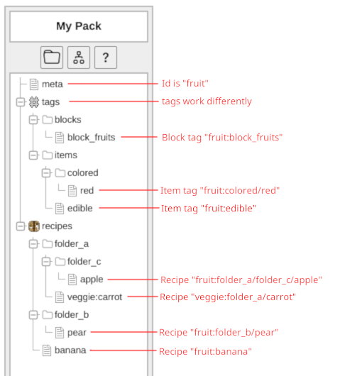

Use the ? Help button to get to this page at any time. Also available is flow-help in the top right.
This is a tool for creating custom datapacks for Minecraft in a more visual manner. It also mainly supports the Origins mod.
I'd like to give special thanks to Nobody#0836 as they helped a lot with the file editors. If you'd like to help with the Origin Creator file editors, you can do so through this github repo.
The Origin Creator autosaves whenever you make a change. For text boxes, they save when you click off them. Data is stored in your browser's cache (not your browsing history), so note that clearing it may delete all your projects. You can (and should) export your work as JsonOC Files (more reliable but don't work in Minecraft) or Datapacks (less reliable but do work in Minecraft) so you can reimport them later.
Hover over fields and labels to view a short description of what each thing does. Blue text is clickable.
Make sure, that in your meta file, "Pack Format" is set to the number applicable to your version of Minecraft. The Origin Creator will not let you use newer features than the version selected.
Items in the left sidebar can optionally specify a namespace and/or an extension in the format namespace:filename.ext. If the namespace is not specified (filename.ext or filename), it will default to the Id set in the meta file. If the extension is not provided, it will default to either .json or .mcfunction. If you're unsure of a file's namespaced id, just click on it at look at the top!
Additionally, when editing files, if you do not specify a namespace for a specific field, it will either default to "minecraft" (for vanilla things like items, blocks, entities, recipes, advancements, etc), or "0" (which means your own pack's ID). You can always use 0 as the namespace to refer to your own pack's ID.
Here's a picture of a given folder structure, and the output namespaces of each file:


The sidebar on the left displays the name of the current project you're working on, provides access to change/add/remove project files, and gives you access to quite a few buttons:
To initalize your first project, click the Reset button, choose whether you are working on a vanilla datapack or an origins datapack, and put in a name and version number for the project. After clicking apply, the project tree will immediately be populated with folders you'll use for the datapack.
If you have a project you want to import and edit instead of working from scratch, you can press the Import button and select that datapack instead. You could also drag the datapack file on to the webpage directly.
Now, click the "meta" file on the left, and MAKE SURE the "Pack Format" number matches your version of Minecraft. Click or hover over the blue label to see possible values.
From this point, you can right click any folder (The items with icons are folders) in the file tree on the left and click New File or New Folder to add that respective item.
After adding anything, click on it to open up an editor for that item; you can switch between editors of different items by clicking them in the left pane. Right clicking any item in the left pane provides you the option to delete, cut, copy, and paste it anywhere. You can also pick up any added items and drag them around in the left pane to move them.
Note that when editing files, if you do not specify a namespace for a specific field, it will either default to "minecraft" (for vanilla things like items, blocks, entities, recipes, advancements, etc), or "0" (which means your own pack's ID). You can always use 0 as the namespace to refer to your own pack's ID.
When you are finished editing, you can press the Export button to export your work to a datapack or to a mod. Note that empty folders will not be exported. If you're having issues exporting to a mod, remember that mods are just thin layers around datapacks. Every .jar file is really a .zip file, and you can change it's extension via renaming and open it up to see what's inside! You can include both assets and datapack files in a mod created this way.
For more information, here's what each of the different default folders in the left are for (you can click on their names to view the wiki):
/execute if command can check for.Most options and details are self explanitory, though there are a few details about the tool you might not know about:
The Origin Creator exposes several functions into the browser console (accessible through F12, Ctrl+Shift+I or similar), or through the global "Autorun" (more info can be found in the next accordion section) editor you can find in the projects tab. The API can be accessed through the global variable oc. As a reminder, NEVER copy code into the browser from someone you don't trust!
Functions and fields here reference files with their "path" in the tree, as opposed to their id and type. You can locate the path of a file with it's id with the locatePath(type, id) function. To do the opposite and get the type and id of a path, use the getTypedId(path) function.
Additionally, folders always have a "/" at the end of their path, while files always do not.
Here's some common functions provided that you may find useful:
oc.id: string The current pack's id. Can be set.oc.active: string | null The path of the currently selected file, or "null" if nothing is selected. Can be set to select a different file automatically.oc.print(message: string, severity: string = "info") Shows a small dialog message to user. severity can be "info", "warning", or "error"oc.locatePath(type: string, id: string): string Attempts to find the path of a file referred to by the type and id provided. If none is found, a path to a new location will be returned instead that is referred by the type and id.oc.getTypedID(path: string, universal: boolean = false): [string, string] Returns the type and id of the file at the given path. If universal is true, "0:" will be turned into the pack id.oc.exists(path: string): boolean Checks if a file or folder exists at the given location.oc.read(path: string): any Reads the file and returns either JSON data or a string of the file's contents. Returns undefined for non-existant folders/files and null for existing folders.oc.write(path: string, data: any = null) Creates a file or folder at the given path, and optionally writes data to it. If a file already exists at the path, it will be overwritten. Folders cannot have data written to them.oc.delete(path: string): boolean Deletes a file or folder at the given path. Returns true on success and false on failure.oc.list(path: string, recursive: boolean = false, filter: (string) => boolean = null): string[] Lists all the files and folders inside the folder at the given path. Returns an empty list if the folder doesn't exist.oc.listFiles(path: string): string[] Lists all decendent files inside the folder at the given path; shorthand for oc.list(path, true, oc.isFile)More functions can be found in the next accordion section.
The Origin Creator will automatically run any javascript found in the global "Autorun" panel in the projects panel of the tool, provided the "Enable" box is checked. You can use this to register macros or do other useful things in code that you don't want to copy into your browser every time the Origin Creator starts. This is a friendly reminder to NEVER PUT CODE YOU DON'T TRUST INTO THIS!
Here's more functions present in the Javascript API.
oc.listAndRead(path: string, recursive: boolean = false, filter: (string, any) => boolean = null): [string,string][] Lists and reads all the files inside the folder at the given path. Returns an empty list if the folder doesn't exist.oc.macro(key: string, f: () => void = null) Registers a simple macro which runs when Ctrl+key is pressed. If key is capitalized, the macro will run when Ctrl+Shift+key is pressed. Attempting to overwrite an existing macro will throw an error. To unwrite a macro, use null for f.oc.isFile(path: string): boolean Checks if the path refers to a file (true if the path does not end in a slash)oc.isFolder(path: string): boolean Checks if the path refers to a folder (true if the path ends in a slash)oc.getFormat(path: string): OCFileType Returns the type of the item at the given path; either "none" for non-existant items, "folder" for folders, "binary" for images and non-text, "text" for text, and "json" for json-data.oc.snakeCase(text: string): string Converts a string into snake case, i.e., this_is_snake_case. From lodash.oc.startCase(text: string): string Converts a string into start case, i.e., This Is Start Case. From lodash.